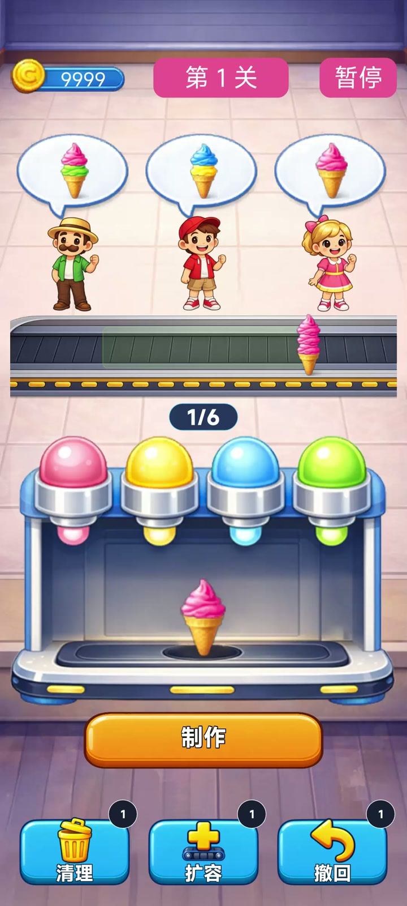
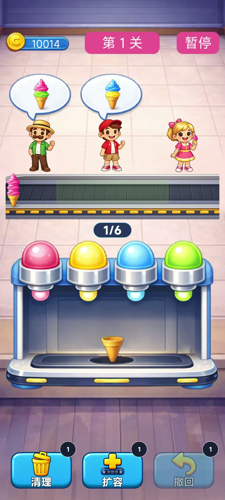
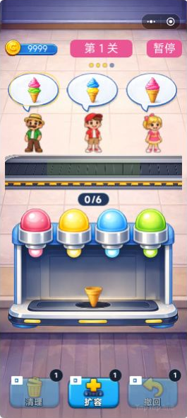

同一操作承载两层匹配规则
普通订单让玩家理解颜色组合，严格订单增加自下而上的顺序要求。仍用同一套叠球操作，规则差异通过顾客订单表现，避免为进阶挑战增加复杂输入。
TAPTAP MAKER / 个人 AI 游戏实践
叠球配餐 / 订单匹配 / 关卡挑战
观察顾客口味，用四色冰激凌叠出最多三球甜筒并送上传送带。普通订单核对颜色数量，严格订单还要求制作顺序，在有限容量中安排配餐节奏。

60 关版已上线；附基础玩法与动作版画面
GAMEPLAY / 核心体验
点击口味按钮逐球制作，再将甜筒送上传送带。普通订单按颜色及数量匹配，严格订单要求从下到上的顺序正确；玩家要兼顾传送带容量和关卡制作额度。订单全部完成后获得金币与星级，解锁后续关卡，也可参与每日挑战、用金币购买小店主题。
IN-GAME CAPTURES / 游戏画面
前两张为 10 月 12 日基础玩法实录；第三张为 10 月 14 日动作版真实预览的游戏区裁图。均为实际运行画面，版本早于最近一次安全区更新。
点击任意截图可查看原图。 多张画面可左右滑动，也可聚焦图库后使用方向键浏览。


DESIGN / 规则与取舍
普通订单让玩家理解颜色组合，严格订单增加自下而上的顺序要求。仍用同一套叠球操作，规则差异通过顾客订单表现，避免为进阶挑战增加复杂输入。
传送带满载、剩余制作额度与等待订单共同构成取舍。容量接近上限时改变视觉提醒，清理、扩容和撤回则提供补救选择。
六位顾客拥有走入、等待、伸手接餐和持物离场动作。餐品跟随动作握点，暂停时动作和位置一同冻结；减少动效设置采用静态姿势。
主线扩展到 60 关，后半程包含海岸、花园和夜市章节。三星最佳记录、每日挑战和三个金币主题提供回访内容，主题仅改变外观。
MY PRACTICE / 项目推进
以 AI 协作将 Unity 原型迁移至 Maker，围绕订单规则、关卡节奏、操作教学和通关反馈持续打磨。重点迭代顾客接餐动作、持物位置、长文字自适应和顶部宿主安全区，并结合手机显示与按钮操作反馈推进版本验收。
TAPTAP / 游戏入口
TapTap 页面提供公开介绍与平台支持的试玩入口。平台当前可玩的内容以该页面为准，本页同时记录开发中的后续迭代。